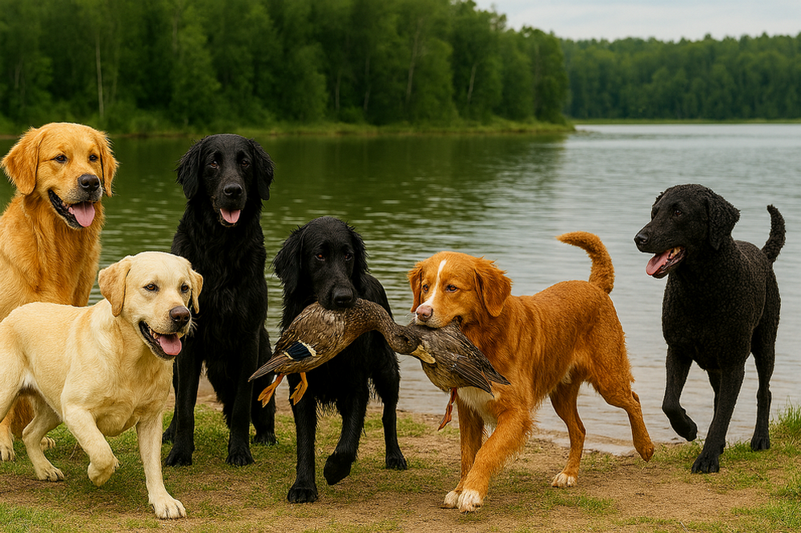
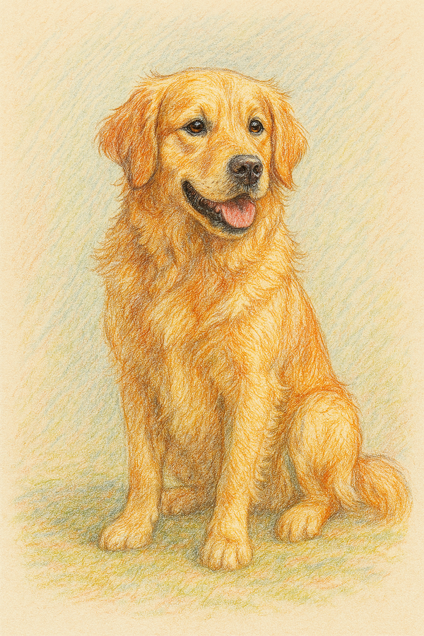
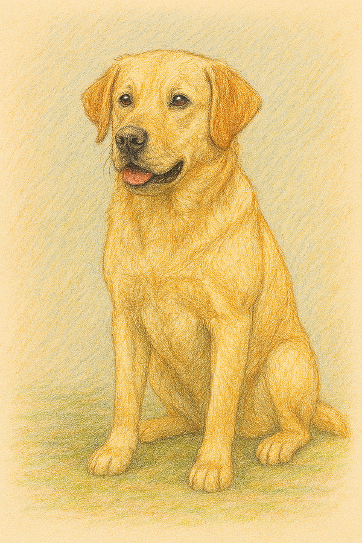
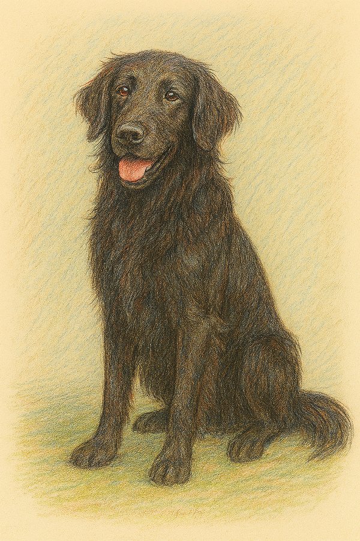
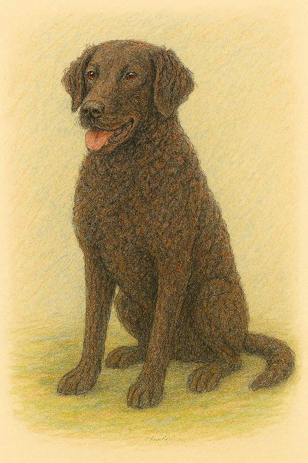
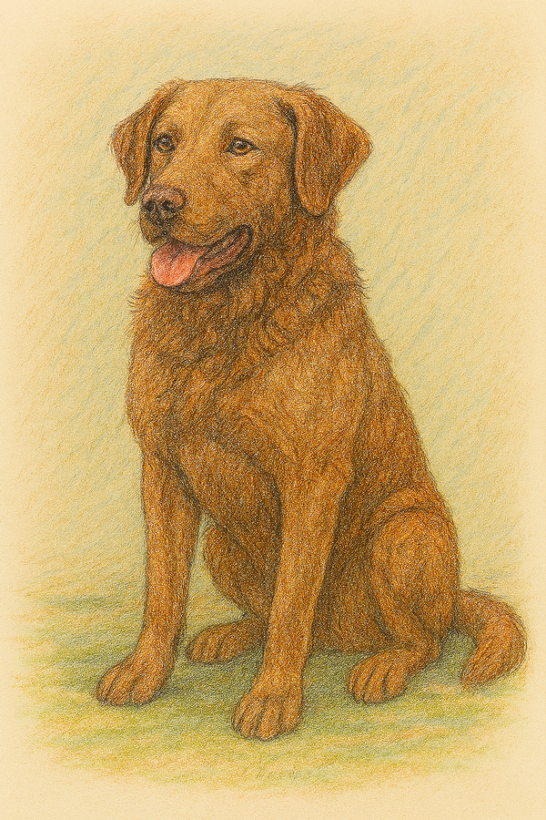
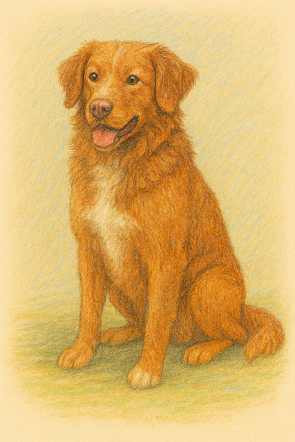

A retriever kutyafajták a világ legnépszerűbb és legsokoldalúbb munkakutyái közé tartoznak, amelyeket eredetileg a lőtt vadak felkutatására és finom elhozatalára tenyésztettek ki. Ez a fajtacsoport összesen hat elismert fajtát foglal magában, amelyek mindegyike kiváló úszó, rendkívül intelligens és szoros köteléket ápol az emberrel.


A Golden Retriever talán a legismertebb és legkedveltebb mind közül, amely Skóciából származik, ahol a nemesek vadászatok során vették hasznát a vízi szárnyasok apportírozására. Gyönyörű, vízlepergető aranyszínű bundát visel. Jelleme rendkívül barátságos, engedelmes és intelligens, emiatt nemcsak kiváló családi kedvenc, hanem tökéletes vakvezető, segítő- és keresőkutya is válik belőle. Nagyon vágyik az emberi társaságra, rosszul viseli a magányt, és szinte mindenkivel, még az idegenekkel vagy más állatokkal is azonnal barátságot köt. Rendkívül könnyen tanítható családi kedvenc. Mozgásigénye igen nagy, lételeme a futás, a labdázás és minden olyan tevékenység, ahol szellemileg és fizikailag is próbára teheti magát. Végtelenül türelmes és gyengéd a gyermekekkel. Idősebb korára is megőrzi játékos, kölyök szerű természetét, ami miatt folyamatos jókedvet hoz a házhoz. Sajnos hajlamos az elhízásra, ezért a gazdinak szigorúan figyelnie kell a megfelelő étrendre és a rendszeres testmozgásra.

A Labrador Retriever szintén világszerte az élvonalban van, és bár neve a Labrador-félszigetre utal, valójában Új-Fundland szigetéről származik, ahol halászoknak segített a hálók és a kiszökött halak partra vontatásában. Szőrzete rövid, sűrű és háromszínű lehet. Rendkívül robusztus felépítésű, erős csontozatú eb, akinek jellegzetes tulajdonsága a vidra szerű farok, amely kormányként segíti őt a gyors úszásban. Hihetetlen munkabírású, fáradhatatlan apportírozó kutya. Intelligenciája és stabil idegrendszere miatt előszeretettel alkalmazzák a rendőrségnél, a katonaságnál drog- és robbanóanyag-keresésre, valamint romkutatóként a katasztrófavédelemnél. Imádja a vizet, és ha meglát egy pocsolyát vagy tavat, szinte lehetetlen visszatartani attól, hogy beleugorjon. Hűséges társ, aki teljes jogú családtag. Nagyon barátságos és közvetlen, emiatt házőrzőnek egyáltalán nem alkalmas, mert a betörőt is játékkal fogadná. Kifejezetten falánk fajta, a jutalomfalatokkal szinte bármire megtanítható, de emiatt a súlyát is folyamatosan ellenőrizni kell. Rendszeres mentális stimulációt igényel, különben unalmában rágásba vagy egyéb nemkívánatos viselkedésbe kezdhet.

A Flat-Coated Retriever, vagyis a simaszőrű retriever egy elegáns, atletikus megjelenésű brit fajta, amelyet a labrador, az uszkár és a szetterek keresztezésével alakítottak ki. Selymes, fényes fekete szőrzetét zászlók díszítik. Élete végéig megőrzi játékos, kölyök természetét. Rendkívül optimista, állandóan csóválja a farkát, és vibráló energiájával azonnal jókedvre deríti a környezetét. Nagyon érzékeny lelkű kutya, a durva nevelési módszerek teljesen összetörik, ezért csak pozitív megerősítéssel és sok dicsérettel szabad tanítani. Kiváló vadászkutya, amely szárazföldön és vízen egyaránt gyorsan, céltudatosan és precízen dolgozik. Nagy mozgásigényű, kiválóan alkalmas kutyás sportokra. Nagyon ragaszkodó a családjához, igényli, hogy bent élhessen a házban, közel az emberekhez. Más kutyákkal szemben kifejezetten békés és barátságos, ritkán keveredik konfliktusba. Egészségére és a daganatos betegségekre való hajlamára fokozottan figyelni kell, mivel ez a fajta sajnos érzékenyebb ezekre.

A Curly-Coated Retriever, azaz a göndörszőrű retriever a fajtacsoport egyik legősibb és legkülönlegesebb tagja, amely markánsan különbözik a többitől. Testét apró, feszes, vízálló fürtök borítják. Ezt a bundát úgy tervezték, hogy megvédje a kutyát a sűrű bozótosok tüskéitől és a fagyos víztől a nehéz vadászatok során. Tartózkodóbb, függetlenebb és éberebb a társainál. A családjához ugyanakkor végtelenül hűséges, büszke és védelmező, így a retrieverek közül ő a leginkább alkalmas jelzőkutyának. Nagyon intelligens, de makacsabb is lehet a társainál, ezért a nevelése következetességet, türelmet és tapasztalatot igényel a gazdi részéről. Kiváló a problémamegoldó képessége, gyorsan tanul, de a monoton ismételgetést hamar megunja, ezért változatos feladatokat kell neki adni. Hatalmas állóképességű, ideális társ aktív sportolóknak. Kevés ápolást igényel, a szőre nem csomósodik könnyen, és nem is szabad fésülni, inkább csak kézzel kell átmasszírozni a tincseket. Ritka fajta, így tulajdonosai egy igazán egyedi és különleges megjelenésű társat tudhatnak maguk mellett.

Chesapeake Bay Retriever az Amerikai Egyesült Államokból, a Maryland állambeli Chesapeake-öböl környékéről származik, ahol a zord téli körülmények között zajló kacsavadászatokra szelektálták. Olajos, hullámos bundája teljesen vízhatlan. Színe a környezetbe való beolvadást segíti, így a száraz fű, az avar és az őszi sár árnyalataiban pompázik. A legkeményebb retriever, a jeges vízen átküzdi magát. Jelleme határozott, bátor és önálló, emiatt határozott kezű, tapasztalt vezetőre van szüksége, aki képes irányítani erős akaratát. Erősen védelmezi családját, az idegenekkel bizalmatlan. Intelligenciája kiemelkedő, de munkavégzés közben hajlamos a saját feje után menni, ha úgy érzi, jobb megoldást tud a feladatra. Rendkívül nagy a mozgásigénye, és ha nem kap elég fizikai vagy szellemi munkát, könnyen rombolóvá és kezelhetetlenné válhat. Nem való városi lakásba, hatalmas udvarra és komoly feladatokra van szüksége ahhoz, hogy kiegyensúlyozott maradjon. Egészséges és szívós fajta, amely jól bírja a szélsőséges időjárási körülményeket is.

A Nova Scotia Duck Tolling Retriever, vagy egyszerűen csak a toller, a csoport legkisebb méretű, Kanadából származó tagja, amely egy egészen különleges vadászati módszerről kapta a nevét. Játékos mozgásával lőtávolságon belülre csalogatja a vadat. Megjelenése és színe kifejezetten a rókáéra emlékeztet. Kettős, vízlepergető bundája kiválóan szigetel, így a fagyos kanadai vizekben is gond nélkül képes dolgozni. Rendkívül energikus, mozgékony és éber kutya, amely szinte állandóan készen áll az akcióra és a játékra. Rendkívül gyorsan tanul, de igényli a kreativitást. Nagyon játékos és ragaszkodó a családjával, de az idegenekkel szemben hűvös és tartózkodó lehet, nem haverkodik azonnal mindenkivel. Jellegzetes tulajdonsága a toller-sikoly, egy magas hangú, izgatott vonyítás, amelyet akkor hallat, ha nagyon fellelkesül valamilyen feladat láttán. Komoly munkakutyás háttérrel rendelkezik, ezért csak olyan gazdinak ajánlott, aki kész naponta órákat szánni a fizikai és mentális lefárasztására.